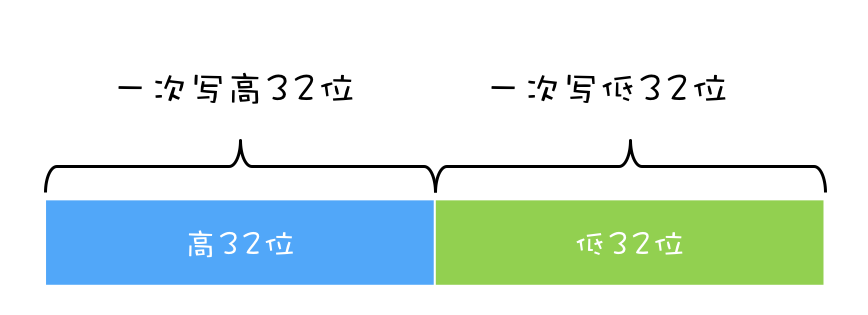
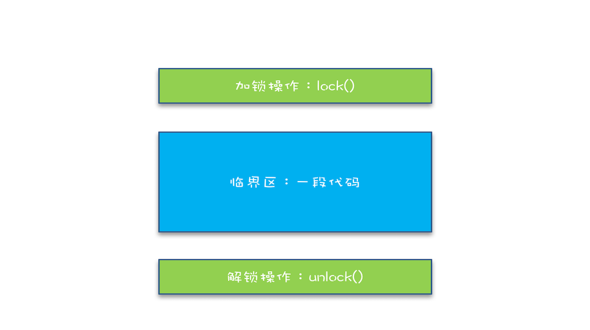
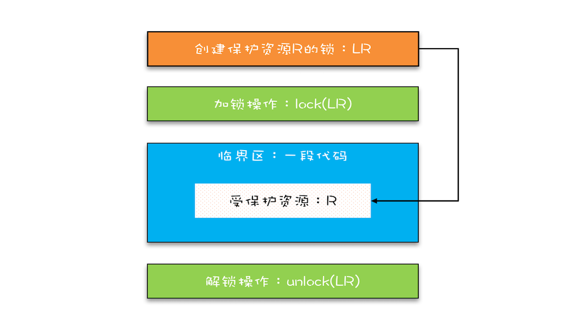
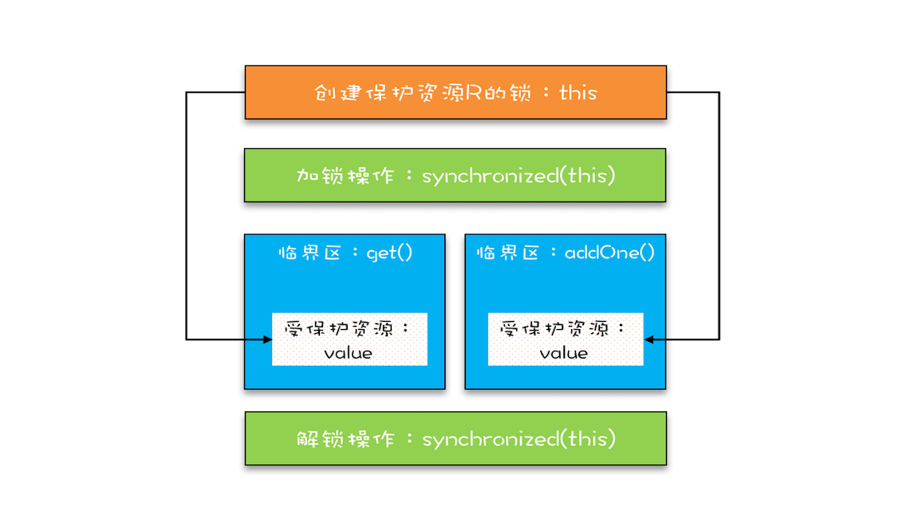
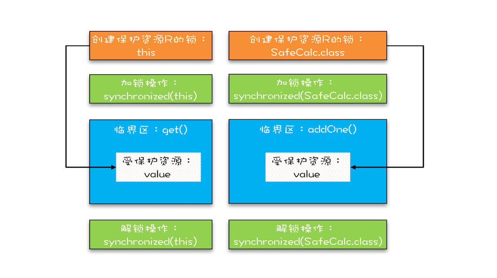

- 00 学习攻略 如何才能学好并发编程？.md.html
- 00 开篇词 你为什么需要学习并发编程？.md.html
- 01 可见性、原子性和有序性问题：并发编程Bug的源头.md.html
- 02 Java内存模型：看Java如何解决可见性和有序性问题.md.html
- 03 互斥锁（上）：解决原子性问题.md.html
- 04 互斥锁（下）：如何用一把锁保护多个资源？.md.html
- 05 一不小心就死锁了，怎么办？.md.html
- 06 用“等待-通知”机制优化循环等待.md.html
- 07 安全性、活跃性以及性能问题.md.html
- 08 管程：并发编程的万能钥匙.md.html
- 09 Java线程（上）：Java线程的生命周期.md.html
- 10 Java线程（中）：创建多少线程才是合适的？.md.html
- 11 Java线程（下）：为什么局部变量是线程安全的？.md.html
- 12 如何用面向对象思想写好并发程序？.md.html
- 13 理论基础模块热点问题答疑.md.html
- 14 Lock和Condition（上）：隐藏在并发包中的管程.md.html
- 15 Lock和Condition（下）：Dubbo如何用管程实现异步转同步？.md.html
- 16 Semaphore：如何快速实现一个限流器？.md.html
- 17 ReadWriteLock：如何快速实现一个完备的缓存？.md.html
- 18 StampedLock：有没有比读写锁更快的锁？.md.html
- 19 CountDownLatch和CyclicBarrier：如何让多线程步调一致？.md.html
- 20 并发容器：都有哪些“坑”需要我们填？.md.html
- 21 原子类：无锁工具类的典范.md.html
- 22 Executor与线程池：如何创建正确的线程池？.md.html
- 23 Future：如何用多线程实现最优的“烧水泡茶”程序？.md.html
- 24 CompletableFuture：异步编程没那么难.md.html
- 25 CompletionService：如何批量执行异步任务？.md.html
- 26 Fork_Join：单机版的MapReduce.md.html
- 27 并发工具类模块热点问题答疑.md.html
- 28 Immutability模式：如何利用不变性解决并发问题？.md.html
- 29 Copy-on-Write模式：不是延时策略的COW.md.html
- 3 个用户来信 打开一个新的并发世界.md.html
- 30 线程本地存储模式：没有共享，就没有伤害.md.html
- 31 Guarded Suspension模式：等待唤醒机制的规范实现.md.html
- 32 Balking模式：再谈线程安全的单例模式.md.html
- 33 Thread-Per-Message模式：最简单实用的分工方法.md.html
- 34 Worker Thread模式：如何避免重复创建线程？.md.html
- 35 两阶段终止模式：如何优雅地终止线程？.md.html
- 36 生产者-消费者模式：用流水线思想提高效率.md.html
- 37 设计模式模块热点问题答疑.md.html
- 38 案例分析（一）：高性能限流器Guava RateLimiter.md.html
- 39 案例分析（二）：高性能网络应用框架Netty.md.html
- 40 案例分析（三）：高性能队列Disruptor.md.html
- 41 案例分析（四）：高性能数据库连接池HiKariCP.md.html
- 42 Actor模型：面向对象原生的并发模型.md.html
- 43 软件事务内存：借鉴数据库的并发经验.md.html
- 44 协程：更轻量级的线程.md.html
- 45 CSP模型：Golang的主力队员.md.html
- 用户来信 真好，面试考到这些并发编程，我都答对了！.md.html
- 结束语 十年之后，初心依旧.md.html
- 捐赠
03 互斥锁（上）：解决原子性问题
在第一篇文章中我们提到，一个或者多个操作在CPU执行的过程中不被中断的特性，称为“原子性”。理解这个特性有助于你分析并发编程Bug出现的原因，例如利用它可以分析出long型变量在32位机器上读写可能出现的诡异Bug，明明已经把变量成功写入内存，重新读出来却不是自己写入的。
那原子性问题到底该如何解决呢？
你已经知道，原子性问题的源头是线程切换，如果能够禁用线程切换那不就能解决这个问题了吗？而操作系统做线程切换是依赖CPU中断的，所以禁止CPU发生中断就能够禁止线程切换。
在早期单核CPU时代，这个方案的确是可行的，而且也有很多应用案例，但是并不适合多核场景。这里我们以32位CPU上执行long型变量的写操作为例来说明这个问题，long型变量是64位，在32位CPU上执行写操作会被拆分成两次写操作（写高32位和写低32位，如下图所示）。

在单核CPU场景下，同一时刻只有一个线程执行，禁止CPU中断，意味着操作系统不会重新调度线程，也就是禁止了线程切换，获得CPU使用权的线程就可以不间断地执行，所以两次写操作一定是：要么都被执行，要么都没有被执行，具有原子性。
但是在多核场景下，同一时刻，有可能有两个线程同时在执行，一个线程执行在CPU-1上，一个线程执行在CPU-2上，此时禁止CPU中断，只能保证CPU上的线程连续执行，并不能保证同一时刻只有一个线程执行，如果这两个线程同时写long型变量高32位的话，那就有可能出现我们开头提及的诡异Bug了。
“同一时刻只有一个线程执行”这个条件非常重要，我们称之为互斥。如果我们能够保证对共享变量的修改是互斥的，那么，无论是单核CPU还是多核CPU，就都能保证原子性了。
简易锁模型
当谈到互斥，相信聪明的你一定想到了那个杀手级解决方案：锁。同时大脑中还会出现以下模型：

简易锁模型
我们把一段需要互斥执行的代码称为临界区。线程在进入临界区之前，首先尝试加锁lock()，如果成功，则进入临界区，此时我们称这个线程持有锁；否则呢就等待，直到持有锁的线程解锁；持有锁的线程执行完临界区的代码后，执行解锁unlock()。
这个过程非常像办公室里高峰期抢占坑位，每个人都是进坑锁门（加锁），出坑开门（解锁），如厕这个事就是临界区。很长时间里，我也是这么理解的。这样理解本身没有问题，但却很容易让我们忽视两个非常非常重要的点：我们锁的是什么？我们保护的又是什么？
改进后的锁模型
我们知道在现实世界里，锁和锁要保护的资源是有对应关系的，比如你用你家的锁保护你家的东西，我用我家的锁保护我家的东西。在并发编程世界里，锁和资源也应该有这个关系，但这个关系在我们上面的模型中是没有体现的，所以我们需要完善一下我们的模型。

改进后的锁模型
首先，我们要把临界区要保护的资源标注出来，如图中临界区里增加了一个元素：受保护的资源R；其次，我们要保护资源R就得为它创建一把锁LR；最后，针对这把锁LR，我们还需在进出临界区时添上加锁操作和解锁操作。另外，在锁LR和受保护资源之间，我特地用一条线做了关联，这个关联关系非常重要。很多并发Bug的出现都是因为把它忽略了，然后就出现了类似锁自家门来保护他家资产的事情，这样的Bug非常不好诊断，因为潜意识里我们认为已经正确加锁了。
Java语言提供的锁技术：synchronized
锁是一种通用的技术方案，Java语言提供的synchronized关键字，就是锁的一种实现。synchronized关键字可以用来修饰方法，也可以用来修饰代码块，它的使用示例基本上都是下面这个样子：
class X {
// 修饰非静态方法
synchronized void foo() {
// 临界区
}
// 修饰静态方法
synchronized static void bar() {
// 临界区
}
// 修饰代码块
Object obj = new Object()；
void baz() {
synchronized(obj) {
// 临界区
}
}
}
看完之后你可能会觉得有点奇怪，这个和我们上面提到的模型有点对不上号啊，加锁lock()和解锁unlock()在哪里呢？其实这两个操作都是有的，只是这两个操作是被Java默默加上的，Java编译器会在synchronized修饰的方法或代码块前后自动加上加锁lock()和解锁unlock()，这样做的好处就是加锁lock()和解锁unlock()一定是成对出现的，毕竟忘记解锁unlock()可是个致命的Bug（意味着其他线程只能死等下去了）。
那synchronized里的加锁lock()和解锁unlock()锁定的对象在哪里呢？上面的代码我们看到只有修饰代码块的时候，锁定了一个obj对象，那修饰方法的时候锁定的是什么呢？这个也是Java的一条隐式规则：
当修饰静态方法的时候，锁定的是当前类的Class对象，在上面的例子中就是Class X；- 当修饰非静态方法的时候，锁定的是当前实例对象this。
对于上面的例子，synchronized修饰静态方法相当于:
class X {
// 修饰静态方法
synchronized(X.class) static void bar() {
// 临界区
}
}
修饰非静态方法，相当于：
class X {
// 修饰非静态方法
synchronized(this) void foo() {
// 临界区
}
}
用synchronized解决count+=1问题
相信你一定记得我们前面文章中提到过的count+=1存在的并发问题，现在我们可以尝试用synchronized来小试牛刀一把，代码如下所示。SafeCalc这个类有两个方法：一个是get()方法，用来获得value的值；另一个是addOne()方法，用来给value加1，并且addOne()方法我们用synchronized修饰。那么我们使用的这两个方法有没有并发问题呢？
class SafeCalc {
long value = 0L;
long get() {
return value;
}
synchronized void addOne() {
value += 1;
}
}
我们先来看看addOne()方法，首先可以肯定，被synchronized修饰后，无论是单核CPU还是多核CPU，只有一个线程能够执行addOne()方法，所以一定能保证原子操作，那是否有可见性问题呢？要回答这问题，就要重温一下上一篇文章中提到的管程中锁的规则。
管程中锁的规则：对一个锁的解锁 Happens-Before 于后续对这个锁的加锁。
管程，就是我们这里的synchronized（至于为什么叫管程，我们后面介绍），我们知道synchronized修饰的临界区是互斥的，也就是说同一时刻只有一个线程执行临界区的代码；而所谓“对一个锁解锁 Happens-Before 后续对这个锁的加锁”，指的是前一个线程的解锁操作对后一个线程的加锁操作可见，综合Happens-Before的传递性原则，我们就能得出前一个线程在临界区修改的共享变量（该操作在解锁之前），对后续进入临界区（该操作在加锁之后）的线程是可见的。
按照这个规则，如果多个线程同时执行addOne()方法，可见性是可以保证的，也就说如果有1000个线程执行addOne()方法，最终结果一定是value的值增加了1000。看到这个结果，我们长出一口气，问题终于解决了。
但也许，你一不小心就忽视了get()方法。执行addOne()方法后，value的值对get()方法是可见的吗？这个可见性是没法保证的。管程中锁的规则，是只保证后续对这个锁的加锁的可见性，而get()方法并没有加锁操作，所以可见性没法保证。那如何解决呢？很简单，就是get()方法也synchronized一下，完整的代码如下所示。
class SafeCalc {
long value = 0L;
synchronized long get() {
return value;
}
synchronized void addOne() {
value += 1;
}
}
上面的代码转换为我们提到的锁模型，就是下面图示这个样子。get()方法和addOne()方法都需要访问value这个受保护的资源，这个资源用this这把锁来保护。线程要进入临界区get()和addOne()，必须先获得this这把锁，这样get()和addOne()也是互斥的。

保护临界区get()和addOne()的示意图
这个模型更像现实世界里面球赛门票的管理，一个座位只允许一个人使用，这个座位就是“受保护资源”，球场的入口就是Java类里的方法，而门票就是用来保护资源的“锁”，Java里的检票工作是由synchronized解决的。
锁和受保护资源的关系
我们前面提到，受保护资源和锁之间的关联关系非常重要，他们的关系是怎样的呢？一个合理的关系是：受保护资源和锁之间的关联关系是N:1的关系。还拿前面球赛门票的管理来类比，就是一个座位，我们只能用一张票来保护，如果多发了重复的票，那就要打架了。现实世界里，我们可以用多把锁来保护同一个资源，但在并发领域是不行的，并发领域的锁和现实世界的锁不是完全匹配的。不过倒是可以用同一把锁来保护多个资源，这个对应到现实世界就是我们所谓的“包场”了。
上面那个例子我稍作改动，把value改成静态变量，把addOne()方法改成静态方法，此时get()方法和addOne()方法是否存在并发问题呢？
class SafeCalc {
static long value = 0L;
synchronized long get() {
return value;
}
synchronized static void addOne() {
value += 1;
}
}
如果你仔细观察，就会发现改动后的代码是用两个锁保护一个资源。这个受保护的资源就是静态变量value，两个锁分别是this和SafeCalc.class。我们可以用下面这幅图来形象描述这个关系。由于临界区get()和addOne()是用两个锁保护的，因此这两个临界区没有互斥关系，临界区addOne()对value的修改对临界区get()也没有可见性保证，这就导致并发问题了。

两把锁保护一个资源的示意图
总结
互斥锁，在并发领域的知名度极高，只要有了并发问题，大家首先容易想到的就是加锁，因为大家都知道，加锁能够保证执行临界区代码的互斥性。这样理解虽然正确，但是却不能够指导你真正用好互斥锁。临界区的代码是操作受保护资源的路径，类似于球场的入口，入口一定要检票，也就是要加锁，但不是随便一把锁都能有效。所以必须深入分析锁定的对象和受保护资源的关系，综合考虑受保护资源的访问路径，多方面考量才能用好互斥锁。
synchronized是Java在语言层面提供的互斥原语，其实Java里面还有很多其他类型的锁，但作为互斥锁，原理都是相通的：锁，一定有一个要锁定的对象，至于这个锁定的对象要保护的资源以及在哪里加锁/解锁，就属于设计层面的事情了。
课后思考
下面的代码用synchronized修饰代码块来尝试解决并发问题，你觉得这个使用方式正确吗？有哪些问题呢？能解决可见性和原子性问题吗？
class SafeCalc {
long value = 0L;
long get() {
synchronized (new Object()) {
return value;
}
}
void addOne() {
synchronized (new Object()) {
value += 1;
}
}
}
欢迎在留言区与我分享你的想法，也欢迎你在留言区记录你的思考过程。感谢阅读，如果你觉得这篇文章对你有帮助的话，也欢迎把它分享给更多的朋友。
© 2019 - 2023 Liangliang Lee. Powered by gin and hexo-theme-book.